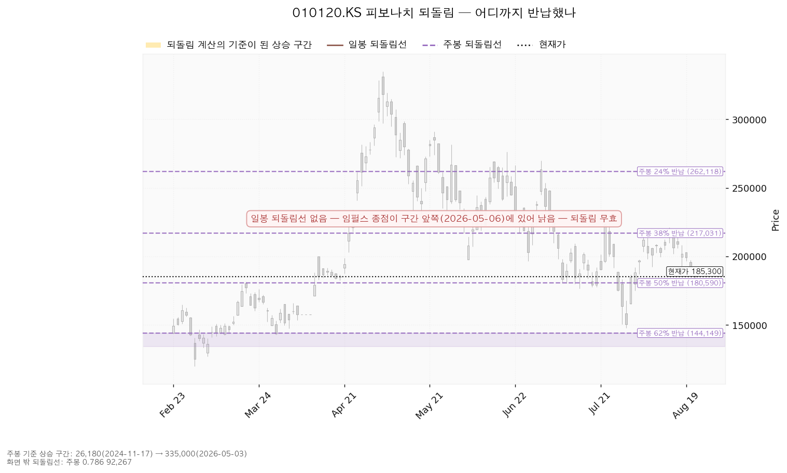
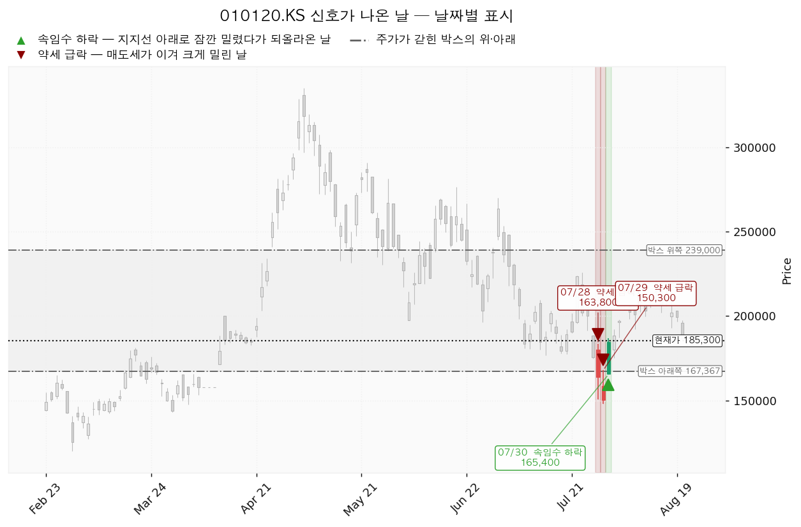
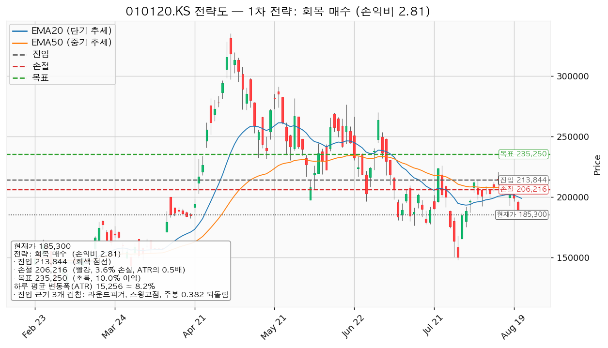
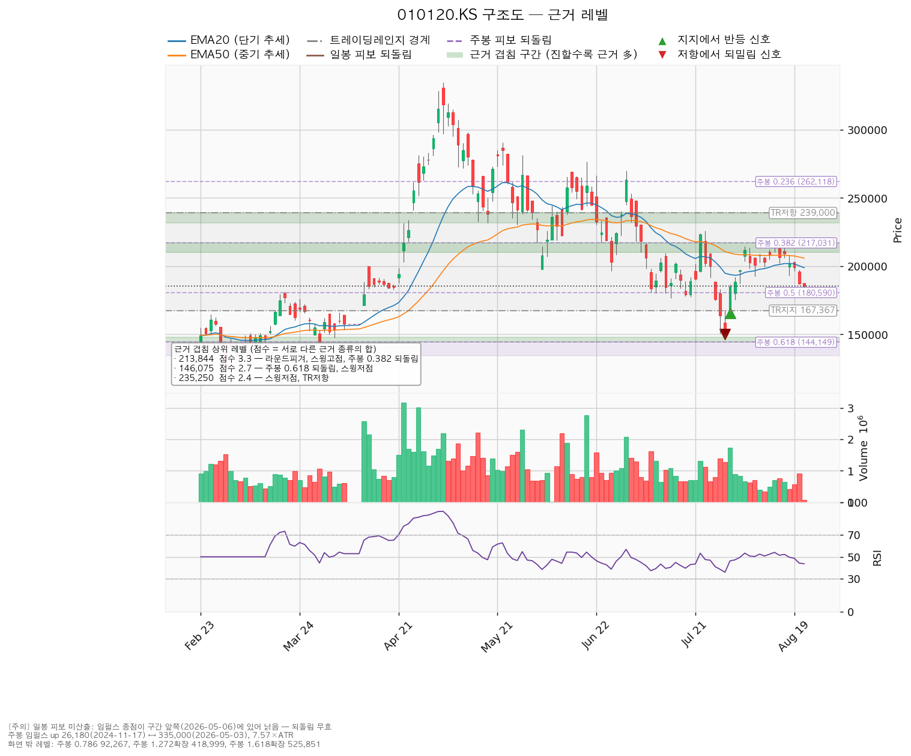

| 항목 | 값 |
|---|---|
| 현재가 (2026-08-24) | 185,300원 |
| 평단 | 233,000원 |
| 평가손익 | -20.47% |
| 본전까지 필요한 상승 | +25.74% |
| 하루 평균 변동폭 | 15,256원 = 주가의 8.23% |
| 지표 | 값 | 읽는 법 |
|---|---|---|
| 현재가 | 185,300원 | — |
| 20일 평균가격선 | 198,830원 | 현재가가 아래 (단기 흐름 약함) |
| 50일 평균가격선 | 205,821원 | 현재가가 아래 (중기 흐름 약함) |
| 과열·침체 온도계 (RSI 14) | 43.6 | 중립~약세. 침체 판정선 30까지는 아직 여유 |
| 하루 평균 변동폭 | 15,256원 | 주가의 8.23% |
| 주가가 갇힌 박스 | 아래쪽 167,367원 / 위쪽 239,000원 | 유효한 박스입니다 (지난 구간의 92.5%를 이 안에서 보냈고, 높이는 하루 변동폭의 4.7배) |
| 직전 고점 / 직전 저점 | 221,000원 / 148,000원 | — |
현재가 185,300원은 이 박스의 아래쪽에서 1.18 ATR 위, 즉 바닥권에 붙어 있는 위치입니다.
크게 오른 구간의 상승분을 몇 % 토해냈는지로 지지·저항을 잡는 방식입니다.
주봉 기준 상승 구간: 26,180원(2024-11-17) → 335,000원(2026-05-03)
| 반납 비율 | 가격 | 현재가 대비 | 의미 |
|---|---|---|---|
| 24% 반납 | 262,118원 | +41.46% | 멀리 있는 저항 |
| 38% 반납 | 217,031원 | +17.12% | 반등 시 첫 관문 (진입 후보대의 위쪽) |
| 50% 반납 | 180,590원 | -2.54% | 바로 아래. 절반 토해내는 자리 |
| 62% 반납 | 144,149원 | -22.21% | 여기까지 밀리면 대세 상승분의 대부분 반납 |
지금 185,300원은 50% 반납선(180,590원) 바로 위에 서 있습니다. 이 선을 종가로 잃으면 대세 상승분의 절반을 반납한 것이 되고, 다음 받침은 62% 반납선인 144,149원까지 크게 벌어집니다. 아래 차트에서 색이 살아 있는 부분이 되돌림 계산의 기준 구간이고, 회색은 계산과 무관한 구간입니다.

박스 안에서 큰손의 매집·이탈 흔적으로 읽는 신호입니다. 아래 세 날짜에서 나왔습니다.
| 날짜 | 신호 | 가격 | 무슨 일이었나 |
|---|---|---|---|
| 2026-07-28 | 약세 급락 | 163,800원 | 매도세가 이겨 박스 아래쪽까지 크게 밀린 날 |
| 2026-07-29 | 약세 급락 | 150,300원 | 박스 아래로 완전히 이탈하며 저점 확대 |
| 2026-07-30 | 속임수 하락 후 반등 | 165,400원 | 박스 아래로 밀렸다가 그날 안에 되올라온 날. 아래쪽에서 매수가 붙었다는 신호 |
7/30의 반등 신호 때문에 시스템은 국면 후보를 "매집"(큰손이 물량을 모으는 구간, 재매집 가능성)으로 제시했습니다. 다만 이는 후보일 뿐이고, 추세 판정 자체는 여전히 하락입니다. 매집 시나리오는 7/30 저점 165,400원이 지켜지는 동안에만 유효하며, 이것이 이 리포트의 최종 손절선인 이유입니다.

셋업 엔진은 매수 방향만 산출합니다. 지금은 하락·중립 국면이라 "저항선을 되찾은 뒤에만 매수 전환"하는 회복 매수 하나만 나왔습니다. 지금 떨어졌다고 사는 저가매수는 금지 판정입니다.
| 항목 | 회복 매수 (유일한 셋업) |
|---|---|
| 방향 | 매수 |
| 진입 | 213,844원 (현재가 대비 +15.40%, 1.87 ATR 위) |
| 집행 손절 | 206,216원 |
| 1차 목표 T1 | 223,500원 — 50% 익절, 손익비 1:1.27 |
| 2차 목표 T2 | 235,250원 — 나머지 50%, 손익비 1:2.81 |
| 최종 손익비 | 1:2.81 |
| 전 구간 손익비 | 1:2.04 |
| 하한 손익비 (T1 후 본전 스탑 기준) | 1:0.64 |
| 현재가 추격 | 비권장 플래그 없음 — 다만 진입이 +15.40% 위라 지금은 대기 구간입니다 |
진입 근거 3개 겹침 (점수 3.3, 구간 210,000~217,031원): 라운드피겨 210,000원 + 직전 스윙고점 + 주봉 38% 반납선(217,031원) 목표 근거 2개 겹침 (점수 2.4, 구간 231,500~239,000원): 직전 스윙저점 + 박스 위쪽 저항
나눠 파는 계획: T1 223,500원에서 50% 익절 → 남은 절반의 손절을 진입가 213,844원(본전)으로 올림 → T2 235,250원에서 정리.

위 셋업은 "새로 들어갈 사람" 좌표입니다. 이미 233,000원에 물려 있다면 깨지면 자르는 선과 오르면 줄이는 선을 따로 잡아야 합니다.
| 단계 | 가격 | 근거 | 현재가 대비 | 평단 대비 | 할 일 |
|---|---|---|---|---|---|
| 1차 경고 | 180,295원 | 라운드피겨 180,000원 + 주봉 50% 반납선 180,590원 (겹침 2.1) | -2.70% | -22.62% | 종가 이탈 시 1/3 축소 |
| 2차 경고 | 173,250원 | 라운드피겨 170,000원 + 직전 저점 176,500원 (겹침 1.8) | -6.50% | -25.64% | 반등 실패 시 추가 축소 |
| 최종 손절 | 165,400 / 167,367원 | 7/30 반등 신호 저점 + 박스 아래쪽 (겹침 1.8, 구간 160,000~167,367원) | -10.74% / -9.68% | -29.01% / -28.17% | 종가 이탈 시 전량 |
| (이탈 후) | 146,075원 | 주봉 62% 반납선 144,149원 + 직전 저점 148,000원 (겹침 2.7) | -21.17% | -37.31% | 여기까지 밀리는 것이 손절을 미룬 대가 |
본전 233,000원은 박스 위쪽 저항 239,000원 바로 아래입니다. 즉 본전을 기다린다는 것은 박스 바닥에서 천장까지 전부 되돌리기를 기다린다는 뜻이며, 현재가에서 +25.74%가 필요합니다. 전량 본전 회복을 노리기보다 아래 구간에서 나눠 줄이는 편이 현실적입니다.
| 가격 | 근거 (겹침 점수) | 현재가 대비 | 평단 대비 | 권장 |
|---|---|---|---|---|
| 194,700원 | 라운드피겨 190,000원 + 직전 저점 두 곳 (1.8) | +5.07% | -16.44% | 여기서 막히면 1/3 축소 |
| 201,551원 | 20일선 + 50일선 + 라운드피겨 200,000원 (1.6) | +8.77% | -13.50% | 두 평균선 회복 실패 시 추가 축소 |
| 213,844원 | 라운드피겨 210,000원 + 스윙고점 + 주봉 38% 반납선 (3.3) | +15.40% | -8.22% | 가장 두꺼운 저항. 최소 절반 정리 권장 |
| 235,250원 | 스윙저점 + 박스 위쪽 저항 (2.4) | +26.96% | +0.97% | 사실상 본전권 — 잔여 정리 검토 |
| 가격 | 점수 | 겹치는 근거 | 구간 | 역할 |
|---|---|---|---|---|
| 213,844원 | 3.3 | 라운드피겨, 스윙고점, 주봉 38% 반납 | 210,000~217,031 | 저항 (가장 두꺼움) |
| 146,075원 | 2.7 | 주봉 62% 반납, 스윙저점 | 144,149~148,000 | 최종 손절 이탈 시 다음 받침 |
| 235,250원 | 2.4 | 스윙저점, 박스 위쪽 | 231,500~239,000 | 저항 |
| 180,295원 | 2.1 | 라운드피겨, 주봉 50% 반납 | 180,000~180,590 | 지지 (1차 경고선) |
| 173,250원 | 1.8 | 라운드피겨, 스윙저점 | 170,000~176,500 | 지지 (2차 경고선) |
| 163,683원 | 1.8 | 라운드피겨, 박스 아래쪽 | 160,000~167,367 | 지지 (최종 손절대) |
| 194,700원 | 1.8 | 라운드피겨, 스윙저점 | 190,000~197,600 | 저항 |
| 201,551원 | 1.6 | 20일선, 라운드피겨, 50일선 | 198,830~205,821 | 저항 |

| 항목 | 값 |
|---|---|
| 평균 목표주가 | 265,500원 (현재가 대비 +43.28%, 평단 대비 +13.95%) |
| 투자의견 | 매수 |
| PER | 데이터가 제공되지 않았습니다 |
| 주당순이익 전망 | 데이터가 제공되지 않았습니다 |
전망과 실제 가격이 정면으로 충돌합니다. 애널리스트 평균은 265,500원·매수 의견이지만, 실제 가격은 5월 고점 335,000원에서 -44.7% 빠져 20일선·50일선 아래에 있고, 추세 판정은 하락입니다. 목표주가는 실적 전망이지 손절 기준이 아닙니다. 하방 방어 근거로 쓰면 안 됩니다.
PER과 주당순이익 전망이 모두 제공되지 않아 밸류에이션 기준 교차검증은 불가능했고, 추정치로 대신 채우지 않았습니다.
시장을 이끄는 주도주인가 — 아닙니다. 5월 고점 대비 반토막 가까이 조정 중이며, 반등할 때마다 평균선에 막히는 흐름입니다. 다만 전력기기 섹터 자체의 강도는 이 분석 범위 밖이므로, 섹터 판단이 필요하시면 시황 분석을 따로 요청해 주십시오.
*본 자료는 정보 제공 목적이며 투자 자문이 아닙니다. 최종 투자 판단과 그 결과에 대한 책임은 투자자 본인에게 있습니다.*